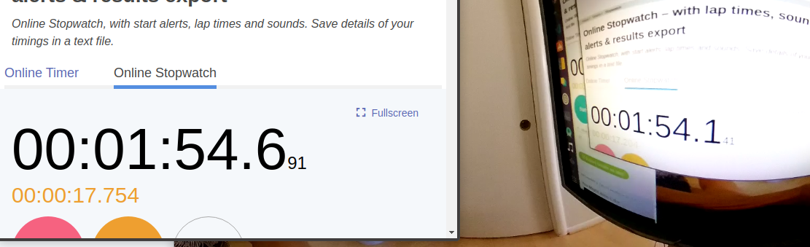
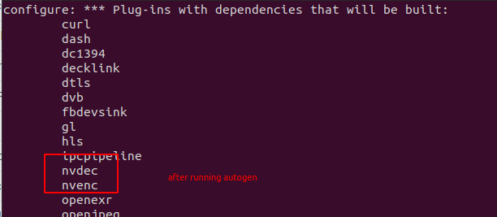
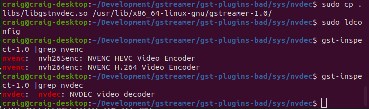
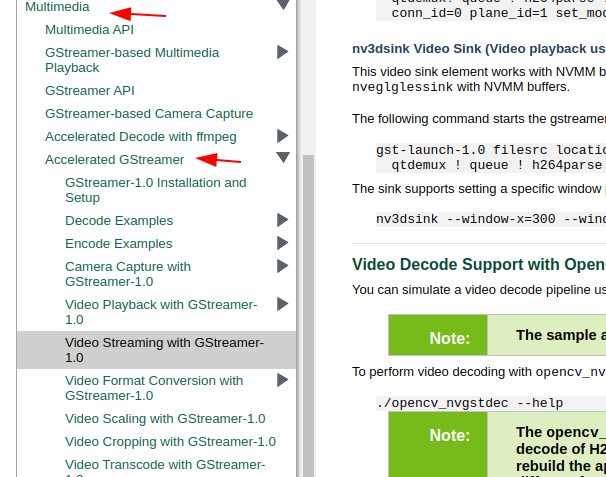

gstreamer optimization on x86
We reduced latency from the default 550ms to 220ms. The latency is measured from the camera to the screen and may be higher with machine vision that may need to move the frame from the GPU to system memory. We achieved this improvement by using two gstreamer plug-ins:
- nvdec hardware decoding plug-in for NVIDIA GPUs
- glimagesink OpenGL plug-in
Overview
nvdec uses dedicated NVIDIA GPU hardware decoding
features and fast copy to move frames between system and GPU memory.
The THETA H.264 stream is decoded on the GPU and
outputs buffers in raw format on the GPU.
Instead of downloading the frame from the GPU to system memory, we use glimagesink to display the OpenGL textures to the computer monitor without having to transfer the frame to system memory.
To use v4l2loopback, we show how to use gldownload to transfer the frame into system memory. Although this technique increases latency, it appears to be faster than streaming without hardware decoding on our test system.
Audience
If you already have streaming working with the THETA on your x86 Linux machine and want to experiment with reducing latency, this article will guide you through installing and configuring hardware decoding on the GPU.
If you are using NVIDIA Jetson boards, you do not need this article. On Nano hardware, you are likely already using hardware acceleration. If you are using NVIDIA Jetson Xavier hardware, the hardware decoder is nvv4l2decoder and is included in JetPack, the Jetson OS you download from NVIDIA. On Jetson, the sink is nv3dsink.
If you are using x86 and do not have streaming working at all, you should first try this pipeline.
pipe_proc = " decodebin ! autovideosink sync=false qos=false";
Note that both sync and qos are false.
If you have enabled the pipeline above and your framerate is still extremely slow, you can try installing all the gstreamer plug-ins using apt from binaries.
If you're still stuck with unusable framerates, this article on using the dedicated video decoder on the GPU may help. However, due to the number of steps involved in installing the gstreamer plug-in, the primary target audience is someone that already has live streaming working and is interested in trying to reduce latency.
Tests
nvdec and glimagesink
pipe_proc = "nvdec ! glimagesink qos=false sync=false";

foreground: 59.182
THETA video: 58.932
Latency: 250ms
Default decodebin and autovideosink
pipe_proc = " decodebin ! autovideosink sync=false";

foreground: 691
THETA video: 141
Latency: 550ms
Result: Latency Reduced by 50%
Equipment
- Intel i7-6800K
- NVIDIA GTX 950 GPU
- RICOH THETA Z1 with firmware 1.60.1
Software
- Ubuntu 20.04
- NVIDIA Linux graphics driver 455.23
- CUDA Version: 11.1
- gstreamer 1.16.2
- NVIDIA Video Codec 11.0.10
Overview of Steps
- verify that you don't have nvdec installed. If you have it installed, you can skip most of this document and go to the section on the gstreamer pipline configuration of gst_viewer.c
- Download and install gst-plugins-bad
-
Install NVIDIA CODEC SDK
-
Modify gst_viewer pipeline to use the nvdec plug-in for hardware decoding and glimagesink for display to the screen
Tips
Verify if you have nvdec installed.
$ gst-inspect-1.0 nvdec
No such element or plugin 'nvdec'
If nvdec is installed, you will see this:
$ gst-inspect-1.0 | grep nvdec
nvdec: nvdec: NVDEC video decoder
Download the gst-plugins-bad
After you clone the repo, you need to checkout the branch that is the same as the version of gstreamer you have installed.
Clone repo.
git clone git://anongit.freedesktop.org/gstreamer/gst-plugins-bad
cd gst-plugins-bad/
# verify gstreamer version
$ gst-inspect-1.0 --version
gst-inspect-1.0 version 1.16.2
GStreamer 1.16.2
$ git checkout 1.16.2
HEAD is now at a6f26408f Release 1.16.2
# verify that you're on the correct branch
$ git branch
* (HEAD detached at 1.16.2)
master
Install NVIDIA CODEC SDK
- Download NVIDIA CODEC SDK.
- Unzip to
/path/to/video/codec/sdk
cd /path/to/video/codec/sdk
cp /usr/local/cuda/include/cuda.h /path/to/gst-plugins-bad/sys/nvenc
cp Interface/nvEncodeAPI.h /path/to/gst-plugins-bad/sys/nvenc
cp Interface/cuviddec.h /path/to/gst-plugins-bad/sys/nvdec
cp Interface/nvcuvid.h /path/to/gst-plugins-bad/sys/nvdec
Build and Install Plug-in
Configure and build.
$ NVENCODE_CFLAGS="-I/home/craig/Development/gstreamer/gst-plugins-bad/sys/nvenc" ./autogen.sh --disable-gtk-doc --with-cuda-prefix="/usr/local/cuda"
cd sys/nvenc
make
sudo cp .libs/libgstnvenc.so /usr/lib/x86_64-linux-gnu/gstreamer-1.0/
cd ../nvdec
make
sudo cp .libs/libgstnvdec.so /usr/lib/x86_64-linux-gnu/gstreamer-1.0/
Confirm that autogen configured project to build nvdec.

Verify Install

Configure gst_viewer.c
Pipeline is roughly around line 192. GitHub permalink is here.
else
// original pipeline
// pipe_proc = " decodebin ! autovideosink sync=false";
// use gstreamer plug-in for hardware acceleration
pipe_proc = "nvdec ! glimagesink qos=false sync=false";
Results
Original Pipeline
The left video is a Logitech C920 USB webcam. The right video is the THETA.
Original pipeline. There is a lag on the THETA video when I move my hand.

nvdec pipeline
The THETA video stream is now much closer to the latency of the NVIDIA C920.

Configuration with v4l2loopack on /dev/video*
To use nvdec with v4l2loopback, I needed to download the OpenGL textures from the GPU to video frames. This introduced some latency. However, testing with vlc still showed improvement over the standard pipeline.
if (strcmp(cmd_name, "gst_loopback") == 0)
// original pipeline
// pipe_proc = "decodebin ! autovideoconvert ! "
// "video/x-raw,format=I420 ! identity drop-allocation=true !"
// "v4l2sink device=/dev/video2 qos=false sync=false";
//
//modified pipeline below
pipe_proc = "nvdec ! gldownload ! videoconvert n-thread=0 ! "
"video/x-raw,format=I420 ! identity drop-allocation=true !"
"v4l2sink device=/dev/video2 qos=false sync=false";
More information on using gldownload is available here.
v4l2loopback and vlc example
vlc is accessing the camera on /dev/video2. I'm doing the test at night in a darkened room.

NVIDIA Jetson
The Jetson is likely already using hardware accleration.
You can get more examples on using gstreamer with nvv4l2decoder,
nvvidconv, and nv3dsink in the NVIDIA Accelerated GStreamer
guide. Hopefuly, this link works.
If the link is broken, use Google search or go to the NVIDIA Jetson Linux Developer Guide and go to the Multimedia section.

References
- README for gst-plugins-bad nvenc
- How to install NVIDIA Gstreamer plugins (nvenc, nvdec) on Ubuntu by Taras Lishchenko on LifeStyleTransfer
- Install NVDEC and NVENC on Gstreamer plugins by Corenel on Gist
- NVIDIA Hardware accelerated video Encoding/Decoding (nvcodec) - Gstreamer by Naresh Ganesan on Medium